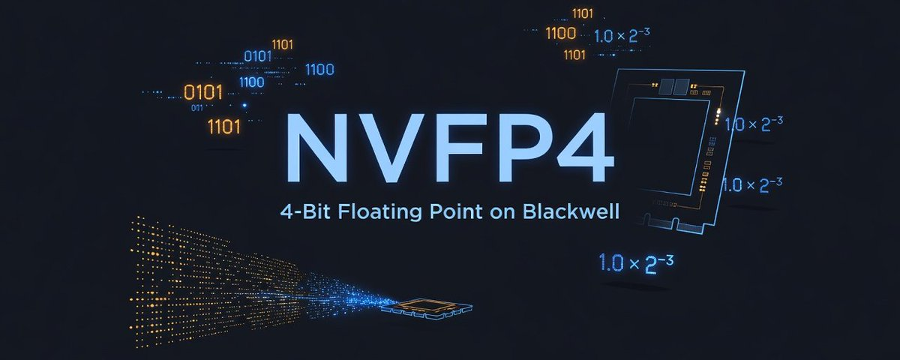
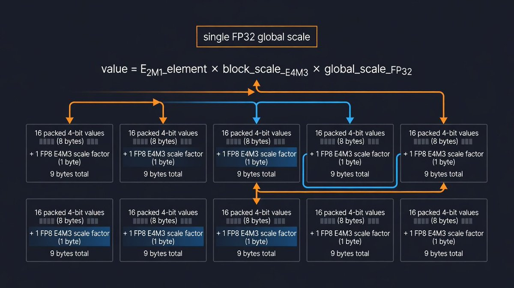
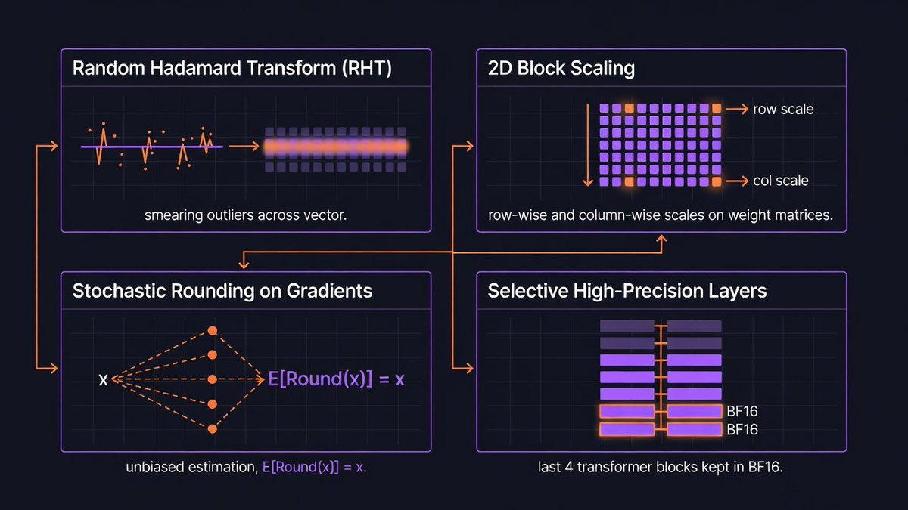
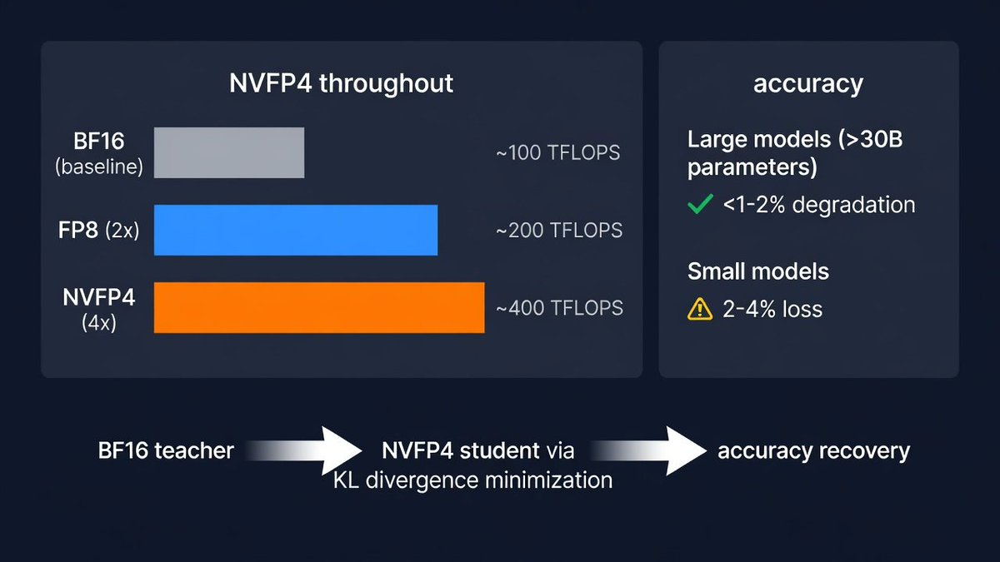

NVIDIA的Blackwell GPU通过名为NVFP4的格式引入了原生4位浮点计算硬件支持。结果是切实的：比FP8高2-3倍吞吐，比BF16少3.5倍内存，大模型精度在1-2个百分点以内。 这不是营销话术：独立基准、预印本研究、社区测试均已确认。一个4780亿参数的模型在BF16下需要960 GB，用NVFP4只需270 GB：这意味着四张96 GB工作站显卡可以运行它，还留有20万token上下文窗口的空间。在消费级硬件上，RTX 5090运行Qwen3.6-35B可达175 tokens/s，能耗比BF16低41%。
NVFP4使用E2M1浮点格式：1个符号位、2个指数位、1个尾数位。16种位模式编码15个不同的值：零、正负0.5、1.0、1.5、2.0、3.0、4.0和6.0。4位本身无法覆盖神经网络中的值范围，NVFP4通过两级缩放策略来解决。 每16个元素块共享一个FP8 E4M3缩放因子，整个张量有一个FP32全局缩放。实际值 = 全局缩放 × 块缩放 × 块内FP4值 × 缩放因子。

存储代价为每16个值9字节（4.5位/元素）。相比OCP MXFP4标准的4.25位，NVFP4有6% 的存储开销。这个开销换来两样东西：更小的块（16 vs 32元素）为不均匀分布提供更紧凑的缩放；FP8缩放因子相比MXFP4的E8M0纯幂缩放有8倍尾数精度。 结果是在LLM基准上困惑度低0.3-0.5。

供应商锁定提醒：NVFP4是NVIDIA专有格式。MXFP4是AMD、Intel、ARM支持的开放OCP标准。两者都在Blackwell Tensor Core上运行，但NVFP4的checkpoint不能移植到非NVIDIA硬件。
Blackwell的第五代Tensor Core原生执行FP4矩阵乘累加运算。它们消费NVFP4输入，产生FP32、BF16或FP8输出。反量化发生在Tensor Core内部，无需单独的反量化核函数。 数据中心（B200、GB200）和消费级（RTX 5090、RTX PRO 6000）Blackwell GPU使用相同的Tensor Core硬件。
第二代Transformer Engine通过微张量缩放管理FP4量化，在子张量级别动态调整精度。这实际上使FP4 Tensor Core性能、参数带宽和每GPU模型容量相比FP8翻倍。
吞吐量数字真实但需要解读。NVIDIA称NVFP4比FP8高2-3倍。独立微基准研究发现Blackwell比H200混合精度吞吐高1.56倍。B200上独立GEMM核基准达到1,547 TFLOPS，仅为理论峰值6,553 TFLOPS的24%：当前核函数还有大量优化空间。
NVFP4相比BF16减少3.5倍内存，相比FP8减少1.8倍。四张96 GB工作站卡（共384 GB）可运行高达7000亿参数的模型，还留有KV缓存空间。Qwen3.6-35B从70 GB缩小到25 GB，能装进单张消费级GPU。NVFP4同样适用于KV缓存：相比FP8提供50% 的减少，在相同内存预算下实现2倍上下文长度或批大小，在prefill密集型场景最高可提升3倍首token延迟。

大模型的新闻是好的。 DeepSeek-R1-0528通过训练后量化到NVFP4，7个基准的退化不到1%。DeepSeek R1 671B在MATH500、AIME24、GPQA-D和GSM8K上的退化在0-1.2个百分点之间。一个120亿参数模型完全以NVFP4预训练10万亿tokens，MMLU-pro准确率62.58%，几乎匹配FP8预训练的62.62%。

小模型损失更多。 消费级GPU基准报告2-4% 的质量退化。训练后量化对包含复杂训练管线（SFT、RL、模型融合）的小模型造成不可忽视的精度下降。
NVIDIA的解决方案是量化感知蒸馏（QAD）。冻结的BF16教师模型通过最小化输出token分布之间的KL散度来训练NVFP4学生。QAD在LLM和视觉语言模型上都能可靠恢复接近BF16的精度。有趣的是，使用原始模型作为教师优于使用更大的教师，与传统蒸馏直觉相反。
NVFP4不仅用于推理。NVIDIA展示了120亿参数模型稳定4位预训练（10万亿tokens），这是公开记载的最长4位精度训练运行。四个算法组件全部必须：
Random Hadamard Transforms： 通过将异常信息在量化前分散到整个向量，约束块级异常值。2D块缩放： 对权重矩阵同时应用行级和列级缩放。随机舍入（用于梯度）： 提供无偏估计：舍入误差在大量运算中相互抵消。选择性高精度层： 最后四个Transformer块保留在BF16。
缺少任何一项训练都会早期发散。随机舍入必须专门应用于梯度，而不是激活或权重。 当NVFP4训练不完全匹配更高精度损失时，在训练结束前切换到BF16（学习率衰减前不久）可以弥合差距。
NVFP4支持贯穿整个推理和训练栈：TensorRT-LLM支持数据中心和工作站Blackwell；vLLM通过llm-compressor库提供NVFP4支持；Hugging Face托管预量化checkpoint（GLM-5.2、Nemotron系列、DeepSeek V4 Pro/Flash、Qwen3.6、MiniMax-M3等）。训练方面，TransformerEngine提供融合FP4量化与GEMM核函数，CUTLASS提供NVFP4 GEMM模板，PyTorch torchao通过diffusers集成为扩散模型提供NVFP4支持。
一个实际限制：GeForce Blackwell（SM120/SM121）上的NVFP4需要CUDA 13.0+ 和驱动580+。DeepGEMM FP4核函数目前仅限数据中心（SM100），与消费级和工作站卡（SM12x）不兼容。
优势虽真实但有边界。在decode阶段（内存受限），NVFP4激活量化收益有限。RTX 5090上仅权重量化的NVFP4-W4A16在decode中可能反而超越全量化NVFP4-W4A4，因为成熟的FP16 GEMM核能击败早期的FP4核。
缩放布局不兼容是一个反复出现的工程问题。 CUTLASS、DeepGEMM、FlashInfer使用不同的缩放布局。以错误布局加载权重会产生静默错误的结果。MX-FP4与NVFP4的混淆加剧了这个问题：为MX-FP4编写的核函数可能期望NVFP4布局，将FP8缩放因子当作FP6读取会损坏每个块。
FP4注意力仍是一个活跃研究领域。 SageAttention3在NVFP4注意力上达到99.52% 的余弦相似度，但精度风险高于FP4 GEMM。当注意力占主导或prefill是瓶颈时，更低精度带来的收益有限。NVFP4更小块大小（16 vs MXFP4的32）的硬件成本也不是零：Tensor Core的相对面积开销约12%。
使用NVFP4的场景： 内存压力限制部署、KV缓存容量约束上下文长度、计算密集型prefill占工作负载主导。3.5倍内存减少使原本需要多GPU配置的模型成为可能。吞吐提升在大批量和prefill场景中最重要。
坚持FP8的场景： 精度信心和核函数成熟度比峰值吞吐更重要。FP8有更长的生产部署历史、更成熟的核函数，不需要NVFP4训练所需的四项算法干预。最强劲的用例是在工作站硬件上装下非常大的模型、通过KV缓存量化服务长上下文工作负载、以及最大化计算密集型推理的吞吐。最弱的用例是小模型推理、decode密集型工作负载、以及缩放布局不兼容带来工程风险的自定义核函数开发。
总的来说，NVFP4是一个重大进步，Blackwell GPU可以利用它以最小的精度损失减少内存开销。
参考：https://x.com/Mayhem4Markets/status/2081909466606305656